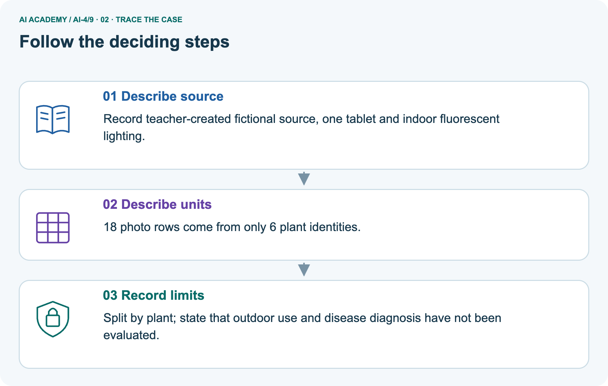
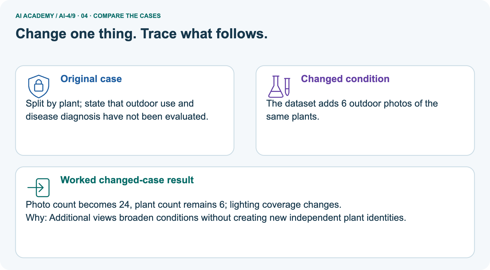
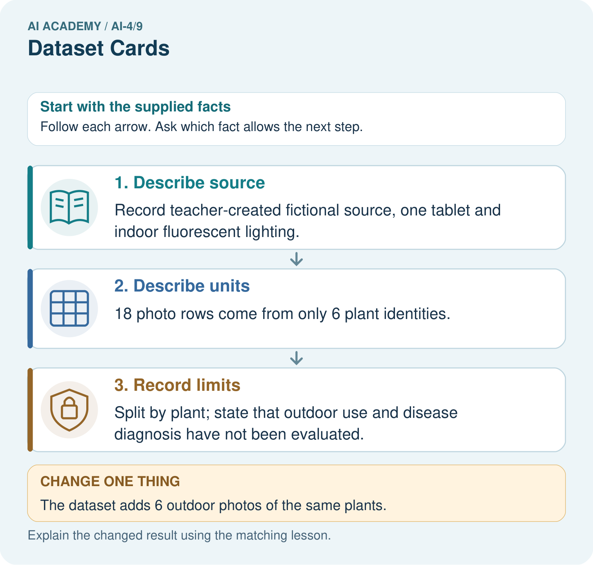
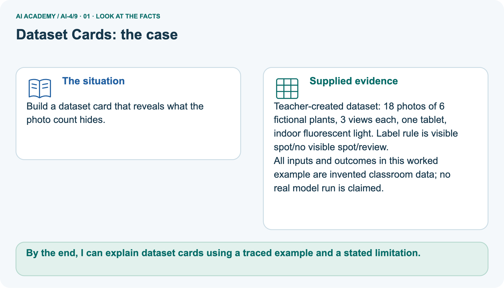
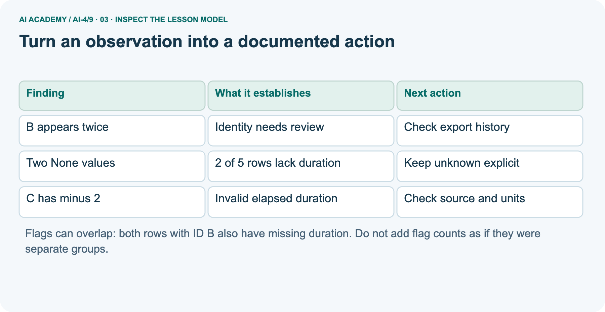
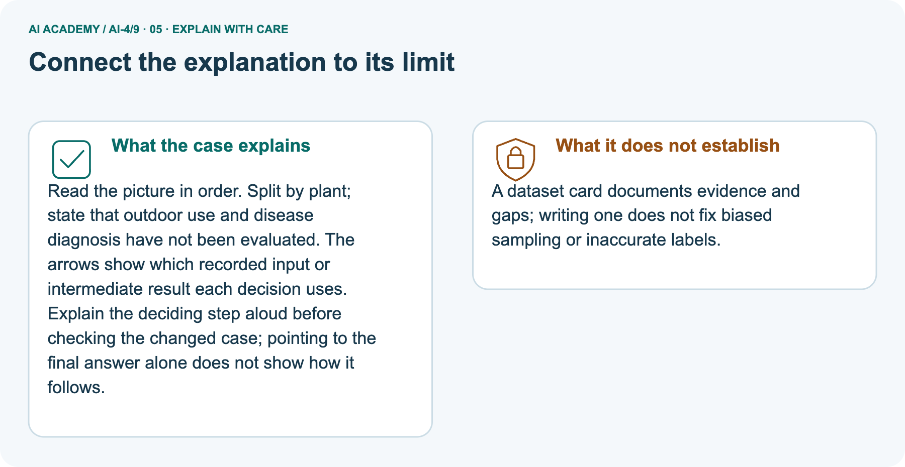
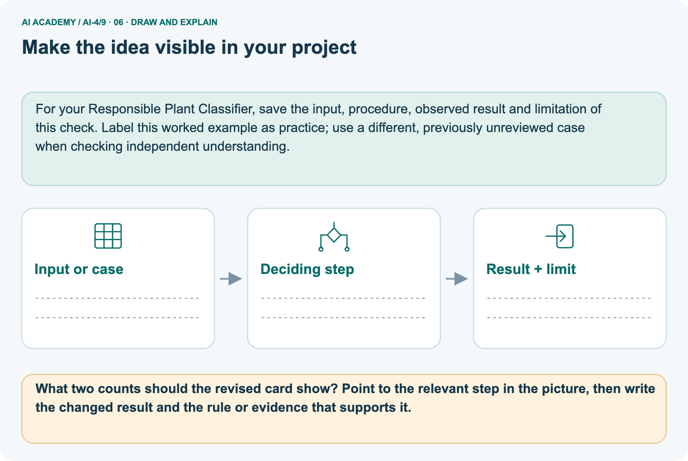

AI Academy · Level 4 · Grade 9 · Week 9 · Student lesson
Dataset Cards
Learn to understand, design, build, test and explain AI systems responsibly.
Project: Responsible Plant Classifier
THE CONNECTED WEEK
Cite the source. Mark unknowns. Keep the version.
Document what a dataset contains and what its evidence cannot establish.
Keep one habit: Complete photo manifest → worked card → exact update → card review lab → independent20-photo card.
Main lesson · Section 1
What must a reader know beyond the photo count?
Write an evidence-linked dataset card that reveals unknowns.
Current card-writing goals
I can document a dataset’s source purpose row unit and version.
I can distinguish supplied card facts from unknown fields and unsupported claims.
I can update counts coverage and limitations when a dataset changes.
Retrieve split and source reasoning
Close your notes first. A rough first answer helps us choose the right starting point; it is not a score for your ability.
Without opening the old lesson, explain one key idea from Leakage. Give an example and a mistake that the idea helps you avoid.
Without opening the old lesson, explain one key idea from Label Quality. Give an example and a mistake that the idea helps you avoid.
Without opening the old lesson, explain one key idea from Classification or Regression?. Give an example and a mistake that the idea helps you avoid.
Which source IDs, split assignments and preprocessing-fit boundaries must remain traceable when describing a dataset?
End goal
By the end, I can explain dataset cards using a traced example and a stated limitation.
Earlier wording, alternatives and picture transcripts
Your learning target
Remember before reading
After trying, check the relevant lesson or ask your teacher. Change the part of your explanation that the evidence shows was wrong.
A dataset card records where data came from, why it exists, its fields, collection process, known gaps, risks, and prohibited uses.

LEARNING TARGET Write five dataset-card fields for a leaf dataset and explain why '1000 images' alone is insufficient.
Builder name and experiment date:
Readiness for the connected explanation
This week’s end goal
Main lesson · Section 2
Read a complete source brief before filling card fields
Separate known facts from questions that remain open.
Current purpose and supplied source facts
A dataset card is a readable account of what a dataset contains, how it was created, what it is intended for and where evidence is missing. Give each claim a source or mark it unknown. Our current fixture is Photo practice v1: a teacher-created fictional set for learning card writing and a toy visible-spot rule. It contains18 photo rows from6 fictional plants,3views each, one tablet, indoor fluorescent light.
No real personal photos, disease diagnosis or trained-model result is supplied.
Complete eighteen-photo manifest
| Plant ID | Photo IDs | Known condition |
|---|---|---|
| P1 | P1a P1b P1c | Same tablet, indoor fluorescent |
| P2 | P2a P2b P2c | Same tablet, indoor fluorescent |
| P3 | P3a P3b P3c | Same tablet, indoor fluorescent |
| P4 | P4a P4b P4c | Same tablet, indoor fluorescent |
| P5 | P5a P5b P5c | Same tablet, indoor fluorescent |
| P6 | P6a P6b P6c | Same tablet, indoor fluorescent |
Unknown fields and honest status
The label vocabulary is visible spot/no visible spot/review, but per-photo labels and their annotation history are not supplied. The exact creation date, detailed image specification, licensing terms for any external reuse and split assignments are not provided. Do not invent them. This teacher-authored classroom fixture is not an external dataset whose permission has been verified.
Mark these fields not supplied or not assigned, and identify the question for the teacher.
Review · Familiar trip-inspection fixture
A dataset can look like a neat table and still contain missing outcomes, repeated records or impossible values. Before fitting a model, inspect what one row represents and document where the table came from.
A dataset card is a short record of its purpose, contents, collection, changes and limits. It helps another person decide whether the data suits a proposed use.
Our source is a teacher-authored fictional export called Robot practice v1, created for this lesson. Each row is intended to describe one trip, with one unique trip ID and elapsed duration in minutes.
Durations may be zero or positive; None means unknown. All trips are described as indoor practice trips. No real robot measurements or personal records were collected, and there is no evidence about outdoor performance.
| Trip ID | Duration in minutes | What is visible |
|---|---|---|
| A | 8 | A recorded duration |
| B | None | An unknown duration |
| B | None | The same ID appears again |
| C | -2 | A negative duration |
| D | 12 | A recorded duration |
Keep this raw version unchanged. At this stage a flag means investigate, not automatically delete or replace. A repeated ID might be a copied row or a problem with the supposed one-row-per-trip definition.
We need evidence before deciding what happened.
Earlier wording, alternatives and picture transcripts
PICTURE ENTRY
Notice → Predict → Explain
Begin with visible evidence; do not explain more than the picture and information support.
MYSTERY The team must use dataset cards to solve a model-building problem. What information do they have? What important evidence is still missing?
Name three visible details without interpreting them.
Predict the data, model, or evaluation decision being made.
Identify one hidden assumption that could change the result.
State what evidence would confirm or reject your prediction.
My prediction and supporting evidence:
A closer explanation
Main lesson · Section 3
Build the card as claim, evidence and status
The reader should be able to locate the fact or see the unanswered question.
Complete worked dataset card
| Card field | Evidence-linked Photo practice v1 entry |
|---|---|
| Purpose / owner | Teacher-maintained fictional classroom card-writing and toy visible-spot practice |
| Source / version | Teacher-created fictional fixture, Photo practice v1; detailed creation date not supplied |
| Row / group / counts | One photo row; related views share plant ID;18photos/6plants/3views each |
| Conditions | One tablet; indoor fluorescent light; other conditions not documented |
| Labels | Vocabulary visible spot/no visible spot/review; per-photo labels and detailed annotation history not supplied |
| Changes / quality | No corrections or transformations supplied; completeness/measurement accuracy not established |
| Splits | Not assigned. A proposed unseen-plant evaluation must keep all views of a plant together; no evaluation has occurred |
| Intended / excluded uses | Classroom documentation practice; no demonstrated outdoor use or disease diagnosis |
| Open questions | Exact label rule/records, source detail, permission for any proposed external reuse, quality checks, collection dates and assignment record |
Explain the documentation mechanism
Read each entry as claim → evidence → status. A plan is not an observed result: “split by plant” is a proposed rule until exact assignments exist. An empty field is not evidence of absence: “labels not supplied” differs from “every photo has no spot.” Dataset-card fields are a classroom selection, not a claim to implement every research datasheet question.
No Python execution is required to establish the supplied18/6 counts; count the manifest groups and views directly.
Review · Earlier trip-audit code and assumptions
rows = [("A", 8), ("B", None), ("B", None),
("C", -2), ("D", 12)]
ids = set()
missing = 0
negative = 0
for trip_id, minutes in rows:
ids.add(trip_id)
if minutes is None:
missing = missing + 1
elif minutes < 0:
negative = negative + 1
print(len(rows), len(ids), missing, negative)A set stores each distinct ID once. The output is 5 4 2 1: five rows, four distinct IDs, two rows with unknown duration and one row with a negative duration. There is one extra occurrence beyond the four distinct IDs.
This is not a count of all rows in repeated-ID groups: both B rows belong to that group.
Turn an observation into a documented action
The code assumes every row is a pair and each duration is a number or None. It is a small audit, not full schema validation. It does not check text values, units, source truth or whether IDs refer to real unique events.
A successful run does not certify data quality.
Earlier wording, alternatives and picture transcripts
ML MECHANISM
Input → Model → Evidence
Trace the information, fitted behavior, and evaluation proof separately.


QUESTION Complete a dataset card and identify two uses the data cannot support.
MODEL IDEA A dataset card records where data came from, why it exists, its fields, collection process, known gaps, risks, and prohibited uses.
PROOF NEEDED Use an unseen case, visible calculation, error analysis, and a stated limitation.
UNDER THE HOOD Source: student-collected classroom plant photos with permission. Purpose: teach a low-stakes healthy-versus-spotted classifier.
Draw a fresh data → model → prediction → evaluation trace:
A closer explanation
Connect the picture and the explanation
Point to the input, the deciding step and the result in this week’s visual. Explain the same step in ordinary words. A picture helps when you can say what each part represents.
Main lesson · Section 4
Compare an attractive photo count with a traceable dataset record
Documentation reveals conditions and gaps; it does not repair them.
Four evaluation conditions

NORMAL Expected data and expected behavior.

Keep this boundary clear
BOUNDARY Value close to a threshold, ambiguous label, or uncertain prediction.

MISSING Necessary field, label, source, or measurement is unavailable.

SHIFTED New lighting, species, device, subgroup, or time condition.
Keep the claim bounded
RELEASE RULE Passing one case never proves generalization. Predefine expected behavior for all four categories.
Choose a revealing case
Which case most threatens today's claim, and why?
Predict the supplied changed case
Change: The dataset adds 6 outdoor photos of the same plants.
Check after predicting
Prediction: Photo count becomes 24, plant count remains 6; lighting coverage changes.
Reason: Additional views broaden conditions without creating new independent plant identities.
Earlier wording, alternatives and picture transcripts
EVALUATION DESIGN
Four Tests, Four Kinds of Evidence
A system is not understood until it survives more than one comfortable example.
NORMAL Expected data and expected behavior.
BOUNDARY Value close to a threshold, ambiguous label, or uncertain prediction.
MISSING Necessary field, label, source, or measurement is unavailable.
SHIFTED New lighting, species, device, subgroup, or time condition.
Change one thing in the pictured case
Main lesson · Section 6
Update the counts and conditions without changing the source identities
Version the card and preserve the previous evidence.
Complete pictured facts and v2 update
Build a dataset card that reveals what the photo count hides.
Teacher-created dataset: 18 photos of 6 fictional plants, 3 views each, one tablet, indoor fluorescent light. Label rule is visible spot/no visible spot/review.
All inputs and outcomes in this worked example are invented classroom data; no real model run is claimed.
Photo practice v2 adds one outdoor view of each of the same P1–P6 plants: new IDs P1d,P2d,P3d,P4d,P5d,P6d. The updated card records24 photos,6plant identities,18 indoor and6 outdoor views. Outdoor lighting details, device for the added views and per-photo labels are not supplied; do not invent them. A condition was added, but no additional source plants or accuracy result were created.
Preserve v1 and record this explicit change in v2.
Trace source, row units and limits



Read the picture one step at a time
Read the picture in order. Split by plant; state that outdoor use and disease diagnosis have not been evaluated. The arrows show which recorded input or intermediate result each decision uses.
Explain the deciding step aloud before checking the changed case; pointing to the final answer alone does not show how it follows.
Predict six outdoor views of the same plants
Change one thing: The dataset adds 6 outdoor photos of the same plants. Predict the result before checking the explanation. What remains the same?
Check after predicting



Explain remaining gaps
A dataset card documents evidence and gaps; writing one does not fix biased sampling or inaccurate labels.
Read the labelled picture: What two counts should the revised card show? Point to the relevant step in the picture, then write the changed result and the rule or evidence that supports it.
Review · Earlier trip card and overlap question
For Robot practice v1, record the purpose as practising inspection, the source as teacher-authored fictional data, and the row meaning as an intended single indoor trip.
Record the five-row count, the ID field, minutes as the duration unit and None as unknown. List the duplicate-ID and invalid-duration findings.
State that no cleaning has occurred, no train/test split is assigned, and no model has been evaluated.
Add intended use, excluded uses, known gaps, version and a contact or owner. Here the lesson teacher maintains the practice copy; its allowed classroom purpose is inspection practice.
Do not describe it as validated navigation data.
For a real external dataset, also verify its actual permission or licence and collection context; an absent field in the documentation is an unanswered question, not permission to invent a value.
Earlier wording, alternatives and picture transcripts
WORKED EVIDENCE
Reason Step by Step
Predict first. Then check each step. A correct answer without visible evidence cannot be audited.

STEP 1 Source: student-collected classroom plant photos with permission.
STEP 2 Purpose: teach a low-stakes healthy-versus-spotted classifier.
STEP 3 Gap: few evening-light photos and no outdoor disease diagnosis evidence.
STEP 4 Prohibit medical, agricultural, or pesticide decisions; require teacher review.
CHECK Verify the denominator, unit, split, class definition, and data version before interpreting a score.
Recalculate, retrace, or restate the evidence independently:
A closer explanation
Learn from the worked case
Cover the result before checking it. Say what is given, choose the procedure, and follow one step at a time. Then uncover the result and explain your first mismatch. Ask why a step is allowed, not only what number it produces.
A pictorial worked case: Dataset Cards
The facts we will use



Why this result follows
What this example does not establish
Main lesson · Section 7
Find card entries that outrun their source
Correct the claim and keep the unresolved question visible.
Complete misleading draft and repairs
Repair this draft: “18 images,18 independent plants, healthy labels, safe outdoors.” The manifest has6plant identities, per-photo labels are not supplied, and only indoor fluorescent conditions are described. The dataset card supports none of those added claims. A second draft says “the split is plant-grouped” when no assignments exist: record a proposed grouping rule and unassigned status instead.
Missing external reuse permission is a question to resolve for that use, not a value to guess.
Propose one evidence check
Diagnose one cause and name the cleanest next experiment:
Earlier wording, alternatives and picture transcripts
ERROR DETECTIVE
Compare → Diagnose → Repair
Do not patch the answer. Find the earliest unsupported assumption, data problem, or experiment error.

| Evidence record | Expected | Actual | Likely cause / next test |
|---|---|---|---|
| normal case | passes | ||
| boundary case | defined behavior | ||
| missing case | safe fallback | ||
| shifted case | measured limit |
CLAIM TO CHALLENGE A file name and list of columns are enough documentation for responsible reuse.
A closer explanation
A complete-looking card does not prove the table is accurate or suitable for a model. It makes claims and unanswered questions reviewable.
Report raw counts separately from any later accepted subset, with explicit rules for missing, invalid and repeated records. Do not silently change denominators after cleaning.
For this exercise, zero is allowed and unknown is not zero. That is a stated schema choice, not a universal rule for all duration datasets.
In a real task, measurement resolution and event definitions determine which values make sense. Dataset inspection also does not replace protecting held out data from model choices.
Main lesson · Section 8
Practise writing and updating the card with less help
Check every supplied fact against a card field.
Current card task and response
From Photo practice v1’s complete manifest, fill purpose/source/version, photo and plant counts, known conditions, label status and split status. Mark one field not supplied and one use with no supporting evaluation. Then update the card for v2’s P1d–P6d outdoor additions, preserving the earlier version.
Explain updated photo and source counts
What two counts should the revised card show? Point to the relevant step in the picture, then write the changed result and the rule or evidence that supports it.
Reserve the independent five-plant card
This is supported practice. Keep the separately named independent case for an attempt before feedback.
Review · Earlier trip-audit practice
A learner replaces both None values with 0 and removes the negative sign from -2. The table now passes a simple nonnegative check, but those edits invent durations.
Keep the original values, record the reason for each flag, and check the source. If a correction is supported, save a new version with the original value, corrected value and reason. If not, keep the uncertainty visible.
Another learner says all robot trips are covered because every row says indoor. A dataset card should instead state that outdoor trips are absent and that the data is fictional.
Extra copies of existing rows do not create new conditions or new independent evidence.
Use workbook W2 for the connected example “Dataset inspection and cards”. First fill the input and rule boxes. Try the middle steps before asking for a hint. After a hint, try the next step yourself.
| Plan | Do | Check |
|---|---|---|
| What is given? Which rule or procedure applies? | Record each intermediate step. | Does the result follow? What remains unknown? |
Explain your trace to a partner. Your partner points to one step to check. Swap roles on the next case. Each person writes their own explanation.
Use the worked case for Dataset inspection and cards. Proposed explanation: “A complete card certifies data quality”. Decide whether this explanation is supported.
Point to the step or supplied fact that decides; explain your repair if needed.
Answer on your own before discussion. If you are unsure, say which step you need help with.
Earlier wording, alternatives and picture transcripts
ML STUDIO
Specify Before You Run
A trustworthy result can be reproduced from the recorded data, code, settings, and evaluation rule.

Experiment record
QUESTION + intended use + success threshold
DATA version + grouped split + leakage check
CODE/preprocessing + features + model + settings + seed
METRICS + positive class + units + denominators
PREDICTIONS + errors + subgroup slices + limitations
HUMAN reviewer + release, revise, limit, or stop decision
Write the minimum record needed to reproduce today's result:
A closer explanation
Practise with less help: Interpret the audit counts
Check your reasoning
Explain the picture
Main lesson · Section 9
Run a complete card-writing and update review
Keep evidence, unknowns and future plans in distinct sentences.
Normal, source-boundary, missing-label and changed-version probes
| Complete Card Review probe | Expected evidence decision |
|---|---|
| Normal:18photos from6plants/3views each | Record photo rows and source groups separately. |
| Boundary: record source is teacher-created fictional, not real collected data | State the fictional source; do not invent permission from real participants or field collection. |
| Missing: no per-photo label assignments supplied | Record vocabulary plus missing label records; no class counts or accuracy. |
| Changed source: v2 addsP1d–P6d outdoor views | 24photos/6plants; conditions broaden, identities unchanged; unknown added-view details remain. |
Write, trace, repair and version
Use the complete v1 manifest and worked card as the shared source. First write your own card from the facts, then compare every claim with the supplied evidence. Mark source, counts, conditions, labels, changes, split status, owner, excluded uses and unanswered questions. Repair the misleading draft without inventing replacements. Apply the exact v2 change in a new version; retain the old card.
No model is fitted or accuracy measured. Keep the selected20-photo/5plant task for a first independent attempt.
Retain the evidence record
| Case | Prediction | Actual | Calculation / evidence | Meaning / next test |
|---|---|---|---|---|
| Normal | ||||
| Boundary | ||||
| Missing | ||||
| Shifted |
Before trying: what do I expect, and why? While trying: which step could first go wrong? Afterwards: what did I actually observe, and what should change? Keep “not run” if you only traced the procedure.
Earlier wording, alternatives and picture transcripts
EVIDENCE LAB
Predict → Run → Calculate → Interpret
Keep the test conditions fixed, record every result, and change only one planned factor.

1. Write the hypothesis and expected evidence before running.
2. Dataset Card Review: inspect two incomplete cards, find missing provenance or risks, and write a defensible replacement.
3. Run one normal, one boundary, one missing, and one shifted case.
4. Calculate the metric from raw counts or row-level errors.
5. Interpret what changed, what did not, and what remains unsafe or unknown.
Plan → try → check
Main lesson · Section 14
Try alone: document a fresh twenty-photo dataset
Make unknown fields visible instead of filling them with plausible guesses.
Selected facts and scope
Write key dataset-card entries for20 photos: five plants, four views each, one phone, one indoor setting. Growth labels have not been supplied.
Only the listed20photos/5plants/4views each,one phone,one indoor setting and absent growth labels are supplied. Do not invent the creator, date, permission, species, class balance or growth outcomes. Record unknown source fields as questions, propose a label contract and plant grouping, and distinguish proposals from completed assignments or evaluation.
A claim about growth needs a defined target and observations, not just photos.
First attempt and support record
Attempt this case before feedback. Record any help. Earlier examples below are further practice; a case already practised with feedback cannot establish fresh transfer.
Your teacher has the independent answer and scoring criteria. Complete the matching workbook week to keep your practice evidence together.
Use feedback after trying
Attempt the independent case before hints. Record whether you worked alone, used a hint or followed a model. After feedback, fix the first unsupported step and explain why it changed.
A later check uses a changed case, not a copied answer.
Earlier wording, alternatives and picture transcripts
Independent case: Changed independent case
Week 9 Independent application
Close the worked explanation. Apply the idea to this different question without copying.
A dataset card lists 500 images but omits collection conditions and intended use. Add two essential entries and explain their value.
My answer, with a trace, calculation or supporting evidence
Create and test
Change one relevant detail. Predict the result before testing. Include a boundary or missing-information case when it helps reveal a limit.
My changed input and expected result
Connect to your project
Publish the Plant Classifier dataset card before model experiments begin; update it when data changes.
The evidence I will keep
Transfer practice from the original programme
Write five dataset-card fields for a leaf dataset and explain why '1000 images' alone is insufficient.
Use feedback to improve
Main lesson · Section 11
Keep the project card ready for the baseline lesson
A later experiment must name the exact dataset version it uses.
Project artifact and evidence
THIS WEEK'S CHECKPOINT Publish the Plant Classifier dataset card before model experiments begin; update it when data changes.
Prepare the project dataset card for the classroom repository: source/version/owner, intended and excluded uses, row and group counts, collection conditions, label rule/history, quality checks, transformations, split assignments or explicit unassigned status, and remaining questions. Preserve links to raw evidence and updates.
A card does not by itself authorize external reuse or certify model performance; resolve those questions with the relevant evidence before that use.
For your Responsible Plant Classifier, save the input, procedure, observed result and limitation of this check.
Label this worked example as practice; use a different, previously unreviewed case when checking independent understanding.
Limits and human decision
Which requirement or risk does this artifact address?
Which dataset, split, code, and metric version does it use?
What normal and shifted cases were tested?
What remains uncertain or weak?
What decision still belongs to a teacher or qualified human?
RESPONSIBLE RELEASE Never use this classroom prototype for medical, pesticide, agricultural, or other consequential decisions.
My evidence-linked project decision:
Earlier wording, alternatives and picture transcripts
CUMULATIVE PROJECT
Responsible Plant Classifier
Every week adds one reviewable artifact to the same evidence-based capstone.

Evidence for your project
Main lesson · Section 16
Finish with one supported entry and one open question
Explain why a complete-looking card cannot certify quality.
Retrieve and explain
Close your notes. Explain this goal in your own words: Inspect row meaning missing values and repeated records
Plan a changed-case return
If you are unsure, return to the worked picture and explain one arrow. If you are ready, change an input or assumption and justify your prediction.
Save your workbook evidence. At the next review, try a different case before opening your old answer.
Reference bank and extra practice
Choose the reference that helps your next step.
Reference · Words for the current experiment
Reference · Section 5
Reference · Words for the current experiment
Tie each word to a particular input, fitted choice or evidence record.
Core vocabulary
| Term | Precise meaning | My ML example |
|---|---|---|
| dataset card | structured documentation for a dataset | |
| provenance | where data originated and changed | |
| limitation | condition weakening valid use | |
| prohibited use | use outside evidence or permission |
Closer-explanation terms
| Word | Meaning |
|---|---|
| Provenance | Where data came from and how it was created |
| Schema | The stated meaning types units and rules for fields |
| Missing value | An unknown or unavailable value rather than a measured zero |
| Dataset card | A concise record of dataset contents creation intended use and limitations |
Earlier wording, alternatives and picture transcripts
VOCABULARY
Words You Can Calculate and Defend
A definition matters when it lets you interpret a new dataset, model, or result.


MISCONCEPTION TO REPAIR A file name and list of columns are enough documentation for responsible reuse.
Repair the claim using a definition, calculation, or test record:
Words used in the closer explanation
Extra challenge · Build a stronger explanation
Reference · Section 10
Extra challenge · Build a stronger explanation
Choose the next useful challenge after the main route.
Thinking ladder
DEFINE Use all four terms precisely: dataset card, provenance, limitation, prohibited use.
CALCULATE Reproduce the worked evidence with units and denominator.
TRACE Explain the data, code or decision path.
DIAGNOSE A file name and list of columns are enough documentation for responsible reuse.
TRANSFER Solve a fresh dataset or model case.
IMPROVE Change one cause and rerun fixed evidence.
DEFEND State intended use, metric, limitation, and human responsibility.
MASTERY RULE A coached calculation becomes mastery only after a different case is completed independently.
Earlier wording, alternatives and picture transcripts
MASTERY
From Knowing the Word to Owning the Idea
Move upward only when you can produce evidence without copying the example.

Reference · Inspect your evidence
Reference · Section 12
Reference · Inspect your evidence
Use after practice; keep the selected20-photo five-plant documentation task for the individual attempt.
Experiment evidence checklist
□ Define the task, feature/target roles, and intended-use boundary.
□ Show the calculation, code trace, or experiment record.
□ Test a normal case and one revealing boundary, missing, or shifted case.
□ Diagnose one failure without changing several factors at once.
□ Name a limitation, fairness concern, and the human-review action.
Independent evidence and defense:
My level: □ Not yet □ With one hint □ Independently □ I can teach and defend it
Earlier wording, alternatives and picture transcripts
INDEPENDENT PROOF
Explain • Calculate • Transfer • Defend
Complete this with a fresh case after guided practice and compare it with the mastery criteria.

REQUIRED PROOF Complete a dataset card and identify two uses the data cannot support.
NEXT BRIDGE Carry the experiment evidence into: Baselines First.
Extra practice · Earlier complete case
Reference · Section 13
Extra practice · Earlier complete case
Attempt the question before opening its worked explanation.
Situation and question
A dataset card lists fields but omits source and intended use.
Add information needed to assess suitability.
Your explanation
Which detail supports the answer, and why does it matter?
Check after trying
Provenance, permissions, collection method/time/conditions, label definitions, coverage, exclusions, missingness, use and limitations. Fields alone are insufficient.
| Evidence or stage | Value or result |
|---|---|
| Origin | Source, permission and collection |
| Meaning | Fields and operational labels |
| Coverage | Conditions, exclusions and missingness |
| Use | Intended tasks and limitations |
Earlier wording, alternatives and picture transcripts
Week 9 Worked case
Use the supplied details to practise the weekly concept before attempting the independent question. This case extends the illustrated lesson.
The situation
The question
Worked explanation
Explain it in your own words
Trace the supplied case visually
A dataset card explains suitability
A dataset card lists fields but omits source and intended use.
Add information needed to assess suitability.
Provenance, permissions, collection method/time/conditions, label definitions, coverage, exclusions, missingness, use and limitations. Fields alone are insufficient.
Reference · Earlier route checklist
Reference · Section 15
Reference · Earlier route checklist
Use one main route; revisit the checklist only when useful.
Checklist and first prediction
| By the end, I can | How I will show it |
|---|---|
| Inspect row meaning missing values and repeated records | Explain the deciding step, show a trace or test, and state one limit. |
| Document dataset source schema and limitations | Explain the deciding step, show a trace or test, and state one limit. |
| Separate observed quality flags from justified corrections | Explain the deciding step, show a trace or test, and state one limit. |
Remember → watch and explain → try with help → investigate → try independently → keep project evidence. Your teacher may spread this lesson across several classes.
Keep your first prediction. Compare it with what the evidence shows and explain any change.
Earlier wording, alternatives and picture transcripts
Start with this question: Build a dataset card that reveals what the photo count hides.
Extra practice · Predict, check and repair
Reference · Section 17
Extra practice · Predict, check and repair
Keep supported feedback separate from the reserved independent case.
First supported question and hint
Build a dataset card that reveals what the photo count hides.
Which labelled step matches this detail? Split by plant; state that outdoor use and disease diagnosis have not been evaluated.
1. Record limits
2. Describe units
3. Describe source
Hint if needed: Read the steps in the pictorial case. Match the supplied detail to the stage that performs or records it.
Practice 1: explain the deciding evidence
Check the first explanation
After your attempt, compare with the supported explanation: Record limits Split by plant; state that outdoor use and disease diagnosis have not been evaluated. Read the picture in order.
Split by plant; state that outdoor use and disease diagnosis have not been evaluated. The arrows show which recorded input or intermediate result each decision uses.
Explain the deciding step aloud before checking the changed case; pointing to the final answer alone does not show how it follows.
Changed-case question and hint
Changed-case practice: The dataset adds 6 outdoor photos of the same plants. Which conclusion is supported by the supplied facts?
1. We can decide the result without examining the changed input or the procedure.
2. Photo count becomes 24, plant count remains 6; lighting coverage changes.
3. This one example guarantees correct results for every future input.
Hint if needed: Use the changed condition and the deciding step in the pictorial trace. The answer must say what follows from those facts.
Practice 2: explain the deciding evidence
Check the changed explanation
After your attempt, compare with the supported explanation: Photo count becomes 24, plant count remains 6; lighting coverage changes. Additional views broaden conditions without creating new independent plant identities.
Repair and keep the record
Review Leakage (ai-4/8). Goal: Choose a split unit that matches the intended prediction claim. Short practice: How many independently new plant identities are in the original test?
Point to the relevant step in the picture, then write the changed result and the rule or evidence that supports it.. Return to this week and explain what you changed.
Review Label Quality (ai-4/6). Goal: Write an observable label rule with boundaries and a review option. Short practice: Why should two annotators not vote away Z’s missing evidence?
Point to the relevant step in the picture, then write the changed result and the rule or evidence that supports it.. Return to this week and explain what you changed.
Review Classification or Regression? (ai-4/3). Goal: Identify a task from the meaning of its target. Short practice: Did regression MAE improve when the boundary changed?
Point to the relevant step in the picture, then write the changed result and the rule or evidence that supports it.. Return to this week and explain what you changed.
The browser lab lets you edit the supported Python examples already included in this lesson. Predict first, run, inspect the actual output or error, change one input, then run again.
Keep code, predictions, actual results and a reasoned revision together. On paper, label your result as a trace rather than an execution.
Use Download completed work in the hosted lesson to export your answers, reflections, practice feedback and code-run evidence. Open the HTML copy to read or print it.
Drafts stay in this browser when storage is available; clear drafts on a shared device.
Earlier wording, alternatives and picture transcripts
Use this supported practice once, in the browser or on paper. Keep the reserved independent assessment for a separate first attempt before teacher feedback.
Repair a missing building block
Predict, run and debug
Keep your completed work
Reference · The six-picture journey
Reference · Section 18
Reference · The six-picture journey
Choose the picture needed for the current question.
01. Dataset Cards: the case



Build a dataset card that reveals what the photo count hides. Supplied facts: Teacher-created dataset: 18 photos of 6 fictional plants, 3 views each, one tablet, indoor fluorescent light.
Label rule is visible spot/no visible spot/review. All inputs and outcomes in this worked example are invented classroom data; no real model run is claimed.
Point to the given fact that matters most. Explain why it matters.
02. Follow the deciding steps
Describe source: Record teacher-created fictional source, one tablet and indoor fluorescent lighting. → Describe units: 18 photo rows come from only 6 plant identities. → Record limits: Split by plant; state that outdoor use and disease diagnosis have not been evaluated.
Point to each numbered stage and explain which recorded input it uses.
03. Turn an observation into a documented action



Turn an observation into a documented action. B appears twice | Identity needs review | Check export history. Two None values | 2 of 5 rows lack duration | Keep unknown explicit.
C has minus 2 | Invalid elapsed duration | Check source and units
Read the labels and values. Explain the relationship the model shows.
04. Change one thing. Trace what follows.
Original case: Split by plant; state that outdoor use and disease diagnosis have not been evaluated. Changed condition: The dataset adds 6 outdoor photos of the same plants.
Expected result: Photo count becomes 24, plant count remains 6; lighting coverage changes. Reason: Additional views broaden conditions without creating new independent plant identities.
Predict before checking the worked changed-case result. Name what changed and what the supplied facts allow you to conclude.
05. Connect the explanation to its limit



Read the picture in order. Split by plant; state that outdoor use and disease diagnosis have not been evaluated. The arrows show which recorded input or intermediate result each decision uses.
Explain the deciding step aloud before checking the changed case; pointing to the final answer alone does not show how it follows.
Limit: A dataset card documents evidence and gaps; writing one does not fix biased sampling or inaccurate labels.
Explain the case, then point to a limit on the claim.
06. Make the idea visible in your project



For your Responsible Plant Classifier, save the input, procedure, observed result and limitation of this check.
Label this worked example as practice; use a different, previously unreviewed case when checking independent understanding. Draw your input, deciding step, result and limit.
Supported question: What two counts should the revised card show? Point to the relevant step in the picture, then write the changed result and the rule or evidence that supports it.
Draw your project trace and justify the deciding step using evidence.